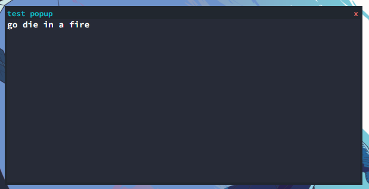

Popups
Popups are a very fundemental thing in netbox. Without them, creating a GUI for your app is very cumbersome and almost impossible.

Some people try to make their programs work inside the terminal, but here are a few reasons why you should not do that.
- They can be difficult to write
- They can be confusing for a end user
- They can make multitasking impossible
To create a popup, you can use the pre-programmed javascript function listed below.
popupCreate(title,body)
To execute javascript inside of netbox, use the
js command. If you dont know what Im talking about, go back to
the terminal page.
Here is a example program that makes a popup with a title of
test popup and a body that says
go die in a fire
root@netbox $ js popupCreate('test popup','go die in a fire');
If you want to create more complex apps, then dont worry. You can always include HTML inside of your popup.
Resizing the popup
By default, you will not be able to change the height or width of the popup. If you want to do this, you must access the DOM.
The easiest way is just to copy this javascript code.
document.getElementById('WINDOWTITLE').style.width = 'YOURWIDTHpx';
document.getElementById('WINDOWTITLE').style.height = 'YOURHEIGHTpx';
Replace WINDOWTITLE with the name you gave your window. You can include spaces. Change YOURHEIGHT to be a number. PLEASE REMEMBER TO KEEP THE
px AT THE END.
Closing Popups
To close your popup and other ones, you can use the pre-programmed javascript function listed below.
popupClose('WINDOWTITLE');
Replace WINDOWTITLE with the title of the popup you made. You can include spaces.
{kind=link}